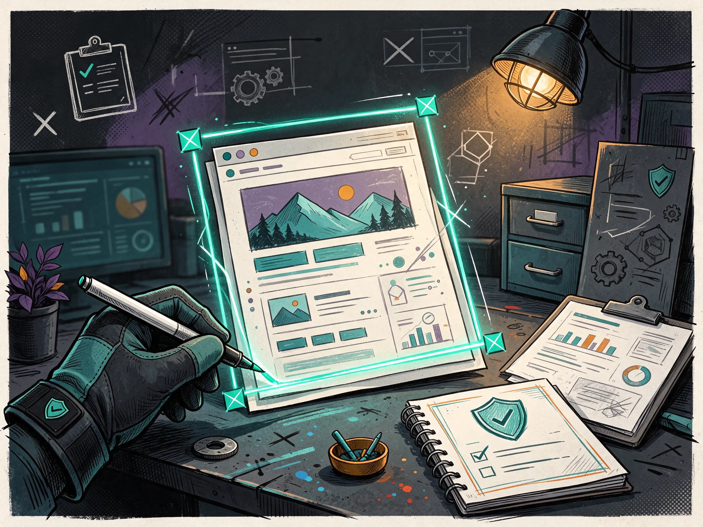

01 · Scope
Stay inside the line.
Permission and stop conditions are part of the interface, not an afterthought.
A small, authorization-first toolkit for testing websites you own or have explicit permission to assess. The only thing we’re trying to catch is a bug—not a workaround.

Install the small Python toolkit, open a permitted URL, and inspect the result from the command line. No build pipeline, account, or hosted service required.
$ pip install -r requirements.txt$ python -m playwright install chromium$ python cli.py open https://example.com --textOpen, flowing contour lines with a seamless loop. No orbit paths, planets, rings, or starfield.

Every visual has a job: set scope, show the workflow, or make the humans easier to find.

Permission and stop conditions are part of the interface, not an afterthought.
Commands, screenshots, text, links, and titles are all visible outputs.
Trade ideas with other builders without losing the project’s careful tone.
Every project button goes somewhere useful: a local HTML page or the relevant service page. No dead-end placeholder CTAs.
Scope, site-owner permission, polite test rates, and clear stop conditions in one readable guide.
Read the guide
See the centered Discord community panel and the newsletter subscription link.
Open community page
Age-gated subscription and one-time support options, with provider checkout handled by each service.
See support optionsThis project does not defeat access controls, CAPTCHAs, rate limits, bot protections, or account security. Check the full scope before you run anything.